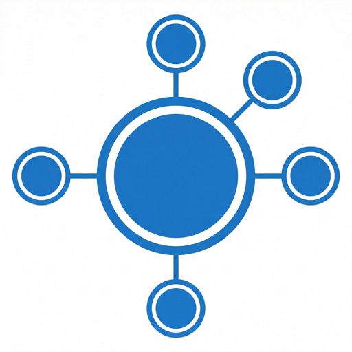

We build human-centered, multimodal, and agentic AI for healthcare delivery, and graph AI and foundation models for drug safety, drug repurposing, and therapeutic discovery — at the Department of Biomedical Informatics, Vanderbilt University Medical Center.
About the lab
OHPEN Lab is directed by You Chen, PhD, FAMIA, Tenured Associate Professor of Biomedical Informatics at Vanderbilt University Medical Center, with affiliated appointments in Computer Science and in Electrical and Computer Engineering at Vanderbilt University. We leverage large-scale, multimodal health data — electronic health records (EHRs), clinical notes, EHR audit logs, genotypes, and wearables — together with multi-scale knowledge sources such as PubMed, FAERS, MAUDE, DrugBank, and the OHDSI phenotype library. Our methods span large language models, AI agents, graph neural networks, data mining, machine learning, temporal and network analysis, and advanced statistics, deployed on cloud platforms including Databricks, Google Cloud, and Terra.
Optimizing clinical pathways and care coordination, monitoring digital information flow, modeling teamwork from EHR audit logs, predicting patient trajectories such as next-day discharge, and addressing disparities in healthcare processes and outcomes.
Discovering and mitigating adverse drug-drug and drug-gene interactions, knowledge-graph foundation models for drug indication prediction and repurposing, and pharmacogenetics powered by biobank-scale real-world data.
At a glance
Research interests
Measuring and refining clinical pathways to enhance patient care journeys, optimize resource allocation, and improve outcomes.
Monitoring and analyzing information flow in modern care coordination to make digital health technology safer and more efficient.
Analyzing healthcare-professional interaction networks learned from EHR audit logs to boost the efficiency of collaborative care.
Discovering and mitigating adverse drug-drug interactions, incorporating human genotype data for pharmacogenetic insight.
Knowledge graphs, graph neural networks, and foundation models to identify therapeutic candidates and predict drug indications.
Quantifying and addressing racial and socioeconomic disparities in healthcare processes, AI performance, and patient outcomes.
Product

CareContinuum helps patients stay on top of obesity and weight-management care in one place — tracking health metrics, medications, appointments, and documents, with AI-supported insights that surface barriers and practical next steps. Developed as part of our human-AI collaborative obesity-care research.
Teaching
Dr. Chen teaches Network Analysis in Healthcare (BMIF 7391 / CS 5891 / CS 3891) at Vanderbilt University, offered every fall since 2021. The course covers network modeling of healthcare systems, teams, and biomedical knowledge.